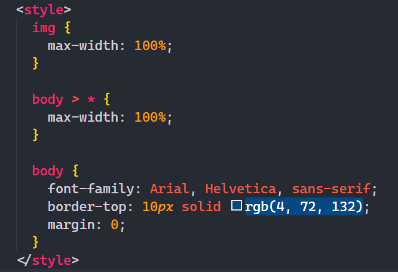
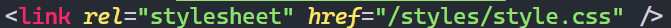

CSS: Intro

Pengenalan CSS
CSS merupakan Cascading Stylesheet atau bahasa yang biasa digunakan untuk mengatur tampilan halaman seperti jenis font,warna tulisan, latar belakang halaman, layout, dan css juga dapat digunakan untuk membuat animasi sederhana pada sebuah website.
CSS pertama kali diusulkan oleh Håkon Wium Lie pada 10 Oktober 1994, pada saat itu, Lie sedang bekerja dengan Tim Berners-Lee di CERN. beberapa bahasa style sheet lain untuk web diusulkan pada waktu yang hampir bersamaan, dan pada World Wide Web Consortium menghasilkan Rekomendasi W3C CSS (CSS1) pertama yang dirilis pada tahun 1996
CSS biasa digunakan bersamaan dengan bahasa markup yaitu HTML maupun XML, untuk membangun sebuah website yang lebih user friendly, CSS juga berguna untuk mengatasi keterbatasan HTML dalam mengatur format halaman website. Apabila hanya menggunakan HTML ketika membangun website dengan beberapa halaman, Anda harus menulis tag untuk sebuah elemen HTML di semua halaman tersebut.
Cara kerja CSS
CSS menggunakan bahasa inggris dasar yang berbasis syntax dilengkapi dengan beberapa rule yang perlu disesuaikan dengan HTML, karena pada dasarnya HTML tidak menerapkan element style, sehingga perlu penyesuaian ulang untuk melakukan penyeleksian pada CSS untuk dapat menyeleksi element pada html, detail cara kerja css seperi ini:
- Load HTML, dalam tahap ini browser memuat HTML.
- Parse HTML, Pada tahap ini terjadi penguraian HTML menjadi Document Object Model (DOM) dan memuat CSS.
- Load CSS, Pada tahap ini browser memuat tautan seperti gambar atau video lalu CSS dimuatkan dan ditautkan.
- Parse CSS, Pada tahap ini terjadi penguraian CSS.
- Render Tree, Penyeleksian tiap CSS yang akan digunakan ke Document Object Model (DOM).
- Display, Setelah semua proses diatas berjalan , proses terakhir ialah CSS dan DOM akan membentuk tampilan visual sebuah halaman situs yang tertampil di layar monitor.
Umumnya untuk membaca element html biasanya css menggunakan selektor yang dapat digunakan, tetapi ada cara untuk memasukkan style css pada tag html yaitu dengan cara seperti
See the Pen Inline Style by Hakhajid (@hafizhkhalis) on CodePen.
Cara diatas disebut sebagai inline style CSS, untuk detailnya berikut pembahasannya.
Jenis - Jenis Pemanggilan Kode CSS
Pada dasarnya kita diberikan pilihan untuk cara memanggil kode css pada html, umumnya ada 3 cara yang dapat digunakan yaitu:
1. Inline CSS
Inline CSS merupakan cara untuk memanggil kode css langsung pada kode html, dengan memberikan atribut style pada tag, lalu diisi dengan value dari property css dibuka dengan (:) ditutup dengan (;) lalu dipisahkan oleh spasi untuk setiap property css yang dibutuhkan. Contohnya:
See the Pen Inline Style 2 by Hakhajid (@hafizhkhalis) on CodePen.
2. Internal CSS
Internal CSS merupakan metode menyisipkan kode css pada tag khusus yang diletakkan pada tag head di html seperti contoh berikut:
External CSS
External CSS merupakan metode memisahkan file css dengan html, sehingga maintanance kode lebih baik, yang dapat dilakukan adalah dengan membuat file baru dengan format (.css) lalu sisipkan kode berikut untuk memanggil css:
href dapat diisi dengan source file, untuk masuk ke folder dapat dengan menggunakan (/) jika file berada di luar folder dapat menelusuri dengan menggunakan (../)
Penutup
Dari artikel ini kita sedikit mengenal terkait konsep dari CSS bekerja dan cara untuk menggunakan CSS yaitu dengan menggunakan inline css, internal css, ataupun dengan external css, dari ketiga cara tersebut sangat tidak dianjurkan menggunakan inline css, alasannya karena inline css merupakan prioritas 2 terbesar pada selektor css, baca CSS SELECTORS untuk penjelasan detail terkait selektor. Sebaiknya untuk menggunakan css dengan external file agar kode lebih mudah di maintanance.